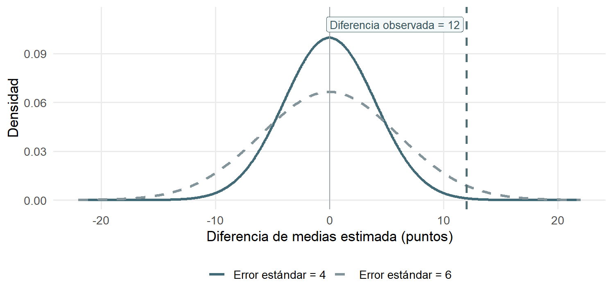

Repaso Unidad 1: pruebas t de una y dos colas
Sesión del miércoles, 4 de noviembre de 2026
Antes de comenzar · ¿Para qué hacemos inferencia?
Imagina que encuestamos a dos grupos de estudiantes y encontramos que sus promedios son diferentes. Sabemos que hay una diferencia entre las personas encuestadas. Pero ¿podemos concluir que sus poblaciones también tienen promedios diferentes?
No necesariamente. Si repitiéramos el estudio con otras personas, podríamos encontrar una diferencia algo distinta. La inferencia estadística nos ayuda a evaluar esa incertidumbre antes de sacar conclusiones sobre una población.
Llamamos muestra a las personas que observamos y población al conjunto sobre el que queremos concluir. El promedio muestral se calcula con los datos recogidos y se representa por \(\bar{x}\); el promedio poblacional, generalmente desconocido, es un parámetro y se representa por \(\mu\).
Parte 1 · Prueba bilateral
Una prueba bilateral responde si los promedios poblacionales son distintos, sin anticipar cuál es mayor.
Ejercicio 1 · Aprendamos una prueba bilateral
Pregunta de investigación
¿Difieren los promedios de sentido de pertenencia universitaria entre estudiantes que participan y no participan en grupos de estudio?
Se encuestó a 100 estudiantes, 50 por grupo. La pertenencia se mide en una escala de 0 a 100.
Grupo 1
Participan en grupos de estudio.
Grupo 2
No participan en grupos de estudio.
Orden de la resta: grupo 1 − grupo 2. Usaremos siempre este orden para interpretar el signo.
1. De la pregunta a las hipótesis
Queremos investigar si los promedios poblacionales de pertenencia universitaria son diferentes. Para evaluar esa pregunta partimos de una afirmación de referencia: que no existe diferencia entre esos promedios. Esa es la hipótesis nula (\(H_0\)). La hipótesis alternativa (\(H_A\)) plantea que sí existe una diferencia.
Si los promedios poblacionales fueran iguales, su resta daría cero. Esto no significa que las personas tengan puntaje cero: significa que los dos promedios serían iguales.
El símbolo \(\mu\) representa un promedio poblacional: \(\mu_1\) es el del grupo 1 y \(\mu_2\), el del grupo 2. La pregunta busca cualquier diferencia, no una dirección específica.
Intenta: escribe \(H_0\) y \(H_A\) utilizando \(\mu_1\) y \(\mu_2\).
Comprueba 1 · Hipótesis: ¿qué significa el cero de la diferencia planteada por \(H_0\)? ¿Significa que nadie tiene pertenencia universitaria?
Antes de observar las medias, acordamos utilizar el 5% como nivel de significación (\(\alpha=0{,}05\)). Es una regla de decisión que explicaremos cuando lleguemos al contraste; después la compararemos brevemente con el 1%.
2. ¿Qué tan diferentes son los promedios observados?
Ahora sí podemos mirar la muestra. Estas son las cantidades que utilizaremos:
| Información | Valor |
|---|---|
| Promedio del grupo 1 (\(\bar{x}_1\)) | 68 |
| Promedio del grupo 2 (\(\bar{x}_2\)) | 56 |
| Error estándar de la diferencia (SE) | 5 |
| Tamaños y grados de libertad | \(n_1=n_2=50\), \(gl=98\) |
Compararemos dos grupos independientes mediante una prueba t, suponiendo varianzas poblacionales iguales. El SE ya está calculado. Los 98 grados de libertad (\(gl\)) se usan más adelante para seleccionar los límites críticos; no es necesario calcularlos aquí.
Primero, una resta que ya conocemos. Para saber cuántos puntos separan los promedios observados, hacemos promedio del grupo 1 − promedio del grupo 2. En símbolos: \(\bar{x}_1-\bar{x}_2\). La barra sobre la letra indica que hablamos de un promedio de la muestra.
Intenta: calcula esa resta. ¿Qué promedio muestral es mayor y por cuántos puntos?
¿Por qué necesitamos el error estándar? La diferencia que calculaste proviene de una muestra. Si estudiáramos a otras personas, podríamos obtener otra diferencia. El error estándar de la diferencia (SE) mide la variabilidad esperable de esa estimación entre muestras, bajo los supuestos de la prueba.
Aquí el SE ya está calculado: 5 puntos. Un SE más pequeño indica una estimación más precisa, si lo demás se mantiene igual. No es la desviación estándar (SD) que describe la dispersión de los puntajes individuales.
Comprueba 2 · Incertidumbre: dos estudios encuentran la misma diferencia observada, pero uno tiene \(SE=4\) y el otro \(SE=6\). ¿Cuál estima la diferencia con mayor precisión y por qué?
¿Para qué calculamos t? Ya sabemos cuánto difieren los promedios observados. Ahora queremos averiguar qué tan lejos está esa diferencia del cero planteado por \(H_0\), teniendo en cuenta la incertidumbre.
Por eso dividimos: t = (diferencia observada − diferencia planteada por \(H_0\)) ÷ error estándar de la diferencia. Como en este caso \(H_0\) plantea una diferencia de cero, podemos escribir:
\[ t=\frac{\bar{x}_1-\bar{x}_2}{SE} \]
Arriba: la diferencia observada entre promedios muestrales. Abajo: el error estándar de esa diferencia. El resultado expresa una distancia respecto de cero, medida en errores estándar, no en puntos de la escala ni en número de estudiantes.
Intenta: utiliza la resta que calculaste y el SE de la tabla para obtener \(t\). Después piensa: ¿por qué dividimos por el SE en vez de quedarnos solo con la resta?
Interpreta el t que obtuviste: a) ¿qué indica su signo sobre los promedios muestrales? b) ¿cuántos errores estándar separan la diferencia observada del cero de \(H_0\)?
Una misma diferencia, distinta incertidumbre
La comparación anterior sobre precisión tiene una consecuencia para el contraste. Con la misma diferencia observada de 12 puntos, un \(SE=4\) produciría \(t=3\), mientras que un \(SE=6\) produciría \(t=2\). La diferencia no cambió: cambió la incertidumbre con la que la comparamos.
La figura muestra distribuciones muestrales ilustrativas bajo igualdad, no la dispersión de puntajes individuales. Mira cuál curva es más ancha: representa mayor incertidumbre de la estimación, no necesariamente mayor dispersión de respuestas individuales.
3. ¿Cómo sabemos si t es suficientemente extremo?
Imaginemos que \(H_0\) es verdadera: en la población, los promedios son iguales. Incluso así, por variación muestral, podríamos observar una diferencia distinta de cero. Por eso no rechazamos \(H_0\) ante cualquier diferencia: necesitamos saber si nuestro \(t\) es suficientemente extremo en comparación con lo que esperaríamos bajo esa igualdad.
Un valor crítico es un límite definido mediante la distribución t, los grados de libertad y el nivel de significación elegido antes de mirar los resultados. Nuestro criterio principal es \(\alpha=0{,}05\): si \(H_0\) fuese verdadera, una regla así rechazaría erróneamente aproximadamente en el 5% de los muestreos, bajo los supuestos de la prueba (error tipo I).
Como la pregunta es bilateral (busca diferencias positivas o negativas), hay dos regiones de rechazo. Con \(gl=98\), sus límites al 5% son −1,98 y +1,98. Rechazamos \(H_0\) si \(t\) queda por debajo de −1,98 o por encima de +1,98; si queda entre esos límites, no la rechazamos.
Intenta: compara el \(t\) que calculaste con los dos límites. ¿Rechazas \(H_0\) al 5%? ¿Por qué no basta con que \(t\) sea distinto de cero?
¿Y si usamos el 1%? Los límites de esta misma prueba bilateral se alejan hasta −2,63 y +2,63. ¿El \(t\) que obtuviste cruza alguno? Es el mismo cálculo; solo cambia la exigencia de la regla.
Cómo leer la figura: busca primero el cero, luego las dos fronteras críticas (−1,98 y +1,98) y finalmente la línea de \(t\) observado. Pregúntate si esta última cayó dentro de una región sombreada de rechazo.

4. ¿Qué diferencia poblacional es compatible con los datos?
La diferencia observada es nuestra estimación basada en la muestra. Como podría variar si estudiáramos a otras personas, podemos acompañarla de un intervalo de confianza en vez de informar solo un número.
El margen de error es una distancia que extendemos hacia abajo y hacia arriba desde la estimación. Para construir el IC95%, calculamos primero margen = valor crítico × SE. Luego restamos el margen para obtener el límite inferior y lo sumamos para obtener el límite superior.
\[ IC=\text{estimación}\ \pm\ \text{margen de error} \]
¿Por qué importa el cero? Una diferencia poblacional de cero significa igualdad de promedios. Después de calcular el intervalo, revisaremos si ese valor está entre los límites.
Intenta: utiliza la diferencia que calculaste, \(SE=5\) y el crítico \(1{,}98\). Obtén primero el margen y luego ambos límites. ¿El intervalo incluye cero?
¿Qué significa el 95%? Si repitiéramos el muestreo muchas veces y construyéramos estos intervalos con el mismo método, aproximadamente el 95% cubriría la verdadera diferencia poblacional, bajo los supuestos. No es la probabilidad de que el parámetro fijo esté dentro de este intervalo una vez calculado.
¿Qué cambia si pedimos un 99% de confianza?
Después de construir el IC95%, podemos comparar cómo cambia el margen al utilizar un nivel de confianza mayor. Los límites se alejan más de la estimación, porque el valor crítico es mayor.
Con el valor crítico redondeado al 1% (\(2{,}63\)), el margen es \(2{,}63\times5=13{,}15\). Por eso:
\[ IC_{99\%}=[12-13{,}15;\ 12+13{,}15]=[-1{,}15;\ 25{,}15] \]
El IC99% es más amplio e incluye cero; resulta coherente con no rechazar \(H_0\) al 1%. En general, \(IC=\hat\Delta\pm(t_{\mathrm{crítico}}\times SE_{\hat\Delta})\).
Cómo leer la figura: la línea vertical señala la diferencia cero; los puntos marcan la diferencia estimada y los segmentos muestran la amplitud de cada intervalo. Compara sus anchos y observa cuáles contienen cero.

5. ¿Qué concluimos sobre la pertenencia universitaria?
Ya tenemos una diferencia observada y una decisión estadística. La conclusión debe mencionar ambas, sin confundir asociación y causalidad.
Intenta: escribe dos frases: una sobre la diferencia muestral y otra sobre la evidencia al 5% respecto de los promedios poblacionales.
Ejercicio 2 · Practiquemos una prueba bilateral
Pregunta de investigación
¿Existen diferencias en la concentración autopercibida al estudiar entre estudiantes con notificaciones del celular activadas y quienes las silencian?
Se encuestó a 100 estudiantes, 50 por grupo. La concentración se mide de 0 a 100; valores altos indican mayor concentración declarada. Suponemos grupos independientes y varianzas iguales.
Grupo 1
Tienen las notificaciones del celular activadas.
Grupo 2
Mantienen las notificaciones silenciadas.
Orden de la resta: grupo 1 − grupo 2.
| Datos disponibles | Valor |
|---|---|
| Promedio muestral del grupo 1 (\(\bar{x}_1\)) | 54 |
| Promedio muestral del grupo 2 (\(\bar{x}_2\)) | 64 |
| SE de la diferencia | 4 |
| Tamaños y grados de libertad | \(n_1=n_2=50\); \(gl=98\) |
| Críticos bilaterales (5% y 1%) | \(\pm1{,}98\) y \(\pm2{,}63\) |
Etapa 1 · Comprender y formular. Identifica la variable y los dos grupos. Escribe \(H_0\) y \(H_A\) con medias poblacionales y explica si buscamos cualquier diferencia o una dirección.
Etapa 2 · Calcular. Resta los promedios en el orden indicado; después divide la diferencia por el SE para obtener \(t\). Interpreta su signo en la muestra.
Etapa 3 · Decidir e interpretar. Compara \(t\) con los límites críticos, primero al 5% y luego al 1%. Construye el IC95% (margen, límite inferior y superior) y determina si contiene cero. Termina con una conclusión poblacional y una limitación causal.
Fórmulas disponibles: \(t=(\hat\Delta-0)/SE_{\hat\Delta}\) e \(IC=\hat\Delta\pm(t_{\mathrm{crítico}}\times SE_{\hat\Delta})\).
Transición · De buscar diferencias a preguntar por una dirección
En una prueba bilateral preguntábamos si los promedios poblacionales eran diferentes, sin anticipar cuál era mayor. Ahora podemos hacer una pregunta más específica antes de observar los datos: ¿es mayor el promedio del primer grupo? Entonces buscamos evidencia en una sola dirección.
Con el orden grupo 1 − grupo 2, «mayor» se traduce en diferencia positiva (derecha) y «menor», en diferencia negativa (izquierda). Cambian \(H_A\) y la región de rechazo; la operación para calcular t sigue siendo la misma. Elegir una cola después de mirar las medias sería incorrecto.
Parte 2 · Prueba unilateral
Ejercicio 3 · Aprendamos una prueba unilateral
Pregunta de investigación
¿El promedio de confianza para enfrentar evaluaciones es mayor entre estudiantes con tutorías académicas que entre estudiantes sin tutorías?
Se estudian 100 estudiantes, 50 por grupo. La confianza académica se mide de 0 a 100; un puntaje alto indica mayor confianza declarada.
Grupo 1
Participan en tutorías académicas.
Grupo 2
No participan en tutorías académicas.
Orden de la resta: grupo 1 − grupo 2.
1. La pregunta nos indica una dirección
La pregunta busca saber si el promedio poblacional del grupo 1 es mayor. Si restamos grupo 1 − grupo 2, ese planteamiento corresponde a una diferencia positiva: buscamos evidencia a la derecha.
¿Y qué pasa con \(H_0\)? En una bilateral la nula era igualdad. Ahora, como la alternativa propone «mayor», la nula incluye igualdad o un promedio menor. No se limita a una igualdad estricta.
Intenta: escribe \(H_A\) y \(H_0\) usando \(\mu_1\) y \(\mu_2\). ¿Por qué la región de rechazo se encuentra a la derecha?
Como antes, fijamos \(\alpha=0{,}05\) antes de observar las medias. También compararemos con el 1%.
2. El cálculo de t es el mismo
| Datos disponibles | Valor |
|---|---|
| Promedio muestral del grupo 1 (\(\bar{x}_1\)) | 67 |
| Promedio muestral del grupo 2 (\(\bar{x}_2\)) | 60 |
| SE de la diferencia | 4 |
| Tamaños y grados de libertad | \(n_1=n_2=50\); \(gl=98\) |
Suponemos dos muestras independientes y varianzas iguales.
Ya sabemos hacer estas operaciones: primero restamos las medias y después dividimos la diferencia por el SE. El cálculo usa el límite de igualdad (\(\mu_1-\mu_2=0\)) de la hipótesis nula.
Intenta: calcula la diferencia y luego t. ¿El signo del resultado va en la dirección propuesta por la pregunta?
3. Con una cola, solo miramos un extremo
Para una prueba unilateral derecha, rechazamos \(H_0\) si t supera el límite positivo. Al 5% y con 98 grados de libertad, el crítico es +1,66. No utilizamos el valor absoluto: un t muy negativo no respondería esta pregunta dirigida hacia la derecha.
Intenta: compara tu t con +1,66. ¿Rechazas \(H_0\) al 5%? Justifica tu respuesta.
Ahora prueba con el 1%: el límite se desplaza a +2,37. ¿El mismo t lo supera?
Lee la figura en este orden: ubica el cero, reconoce el límite crítico +1,66, identifica la línea del t observado y observa si quedó a la derecha de esa frontera. No hace falta interpretar la altura de la curva (densidad) para tomar la decisión.

4. Concluir con los resultados
Intenta: escribe una conclusión breve sobre la confianza académica al 5%. ¿Qué puedes afirmar sobre los promedios poblacionales? ¿Qué no puedes atribuir a las tutorías?
Antes de practicar · ¿Y si la pregunta dijera «menor»?
En el ejemplo de tutorías preguntamos si el primer promedio era mayor: con el orden grupo 1 − grupo 2, eso corresponde a una diferencia positiva y a buscar evidencia a la derecha.
También podemos investigar lo contrario. Si preguntamos si el primer promedio es menor, entonces, con el mismo orden, la diferencia que buscamos es negativa y la región de rechazo se sitúa a la izquierda.
El esquema siguiente compara preguntas hipotéticas, sin utilizar los resultados del próximo ejercicio:
La regla no es memorizar izquierda o derecha: primero leemos qué afirma la pregunta y luego deducimos el signo que tendría la diferencia grupo 1 − grupo 2.
Comprueba 3 · Direccionalidad: en un estudio diferente, antes de mirar datos, preguntamos si el promedio poblacional del grupo 1 es menor que el del grupo 2. ¿Qué signo tendría la diferencia que buscamos y hacia qué extremo miraríamos?
Responde con tus palabras y verifica la lógica con el esquema anterior antes de comenzar la práctica.
Ejercicio 4 · Practiquemos una prueba unilateral
Pregunta de investigación
¿El promedio de horas semanales de estudio individual es menor entre estudiantes que trabajan durante el semestre que entre quienes no trabajan?
Se encuestó a 100 estudiantes, 50 por grupo, y se registraron sus horas semanales de estudio individual. Suponemos grupos independientes y varianzas iguales.
Grupo 1
Trabajan durante el semestre.
Grupo 2
No trabajan durante el semestre.
Orden de la resta: grupo 1 − grupo 2.
| Datos disponibles | Valor |
|---|---|
| Promedio muestral del grupo 1 (horas) | 11 |
| Promedio muestral del grupo 2 (horas) | 15 |
| SE de la diferencia (horas) | 2 |
| Tamaños y grados de libertad | \(n_1=n_2=50\); \(gl=98\) |
| Críticos de una cola (magnitud) | 1,66 (5%) y 2,37 (1%) |
Etapa 1 · Comprender la pregunta. Identifica la variable, los grupos y el orden de la resta. Deduce la dirección que plantea la pregunta antes de mirar las medias.
Etapa 2 · Formular hipótesis. Escribe \(H_A\) y \(H_0\) con medias poblacionales. Explica cómo la pregunta determina el sentido del contraste.
Etapa 3 · Calcular. Resta los promedios muestrales y utiliza el SE para calcular \(t\). Interpreta el signo obtenido.
Etapa 4 · Decidir. Coloca el signo correcto a los críticos que se ofrecen en magnitud. Compara \(t\) primero al 5% y después al 1%, justificando ambas decisiones.
Etapa 5 · Concluir. Redacta una conclusión sobre los promedios poblacionales y explica por qué no demuestra causalidad.
Fórmula disponible: \(t=(\hat\Delta-0)/SE_{\hat\Delta}\).
Cierre · ¿Cuándo usamos cada contraste?
Cambiamos el tipo de pregunta, no la forma de calcular t. Solo ahora, después de practicar cada procedimiento, comparamos sus criterios:
| Pregunta formulada antes de ver los datos | Hipótesis alternativa | Rechazo al 5%, 98 gl |
|---|---|---|
| ¿Son diferentes? | \(\mu_1-\mu_2\neq0\) | \(t<-1{,}98\) o \(t>1{,}98\) |
| ¿Es mayor el primero? | \(\mu_1-\mu_2>0\) | \(t>1{,}66\) |
| ¿Es menor el primero? | \(\mu_1-\mu_2<0\) | \(t<-1{,}66\) |
Idea clave: no rechazar \(H_0\) no prueba que las medias sean iguales. Solo indica que no reunimos evidencia suficiente con ese criterio y estos datos.
Pregunta de salida: si antes de observar los datos preguntas si el promedio poblacional del grupo 1 es menor, ¿qué tipo de prueba corresponde? ¿Por qué no puedes decidir la dirección después de mirar las medias?